O que funciona
O retrato atual já transmite proximidade. A bio menciona Guarujá e acolhimento jurídico para mulheres. Há atuação pública visível no OAB Por Elas, repertório educativo sobre vida digital e um post próprio sobre união estável.
Casal Photo · Proposta de presença digital · 12 nov. 2026
Uma presença digital para Vanessa Maciel Fernandes que aproxima mulheres de informações jurídicas e canais oficiais, com a voz de uma advogada que já atua nessa pauta no Guarujá.
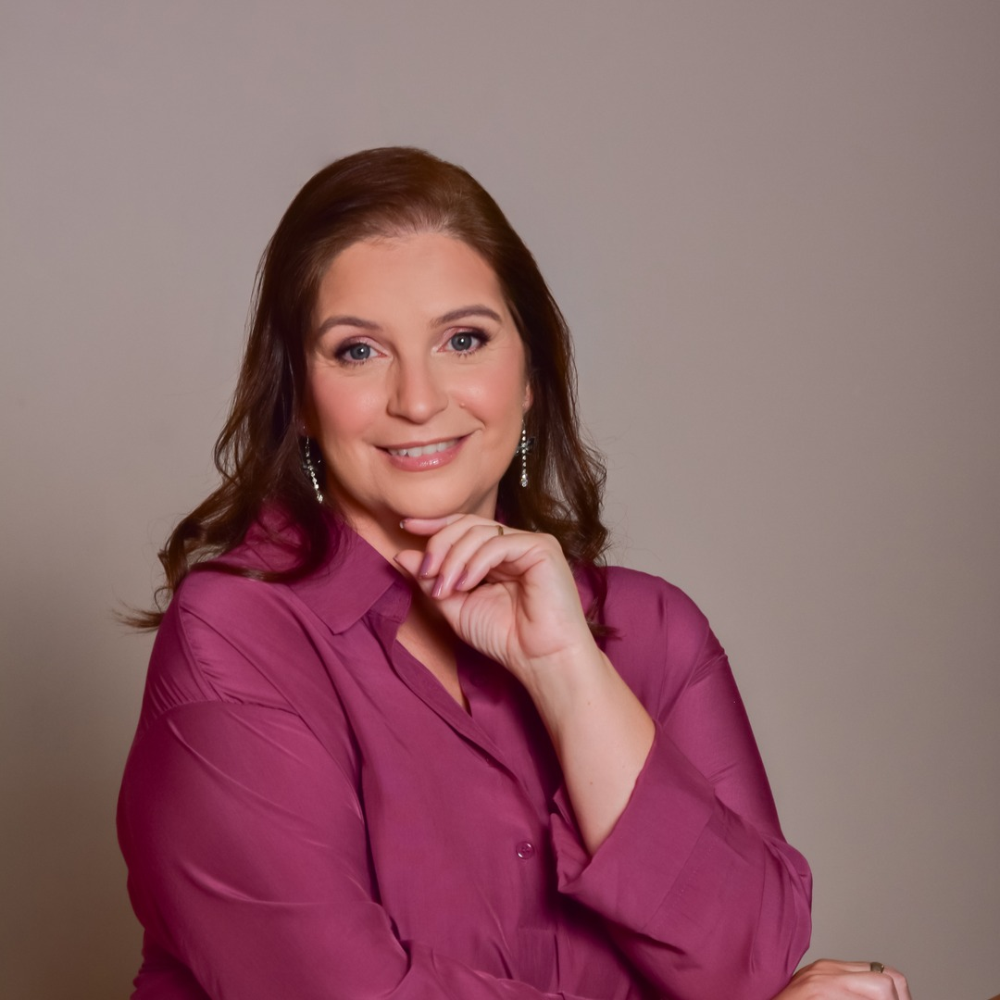
01 · Avaliação
A bio diz onde Vanessa atua e com quem quer falar. Propomos organizar o perfil para que quem chega encontre, em poucos segundos, uma explicação útil, a trajetória da advogada e os canais adequados para cada necessidade.
O retrato atual já transmite proximidade. A bio menciona Guarujá e acolhimento jurídico para mulheres. Há atuação pública visível no OAB Por Elas, repertório educativo sobre vida digital e um post próprio sobre união estável.
Colaborações institucionais, registros pessoais e capas com estilos diferentes dividem a grade. Os destaques “Destaques” e “⚖” exigem que a pessoa abra para entender. A bio mistura atuação particular e funções institucionais; a inscrição profissional não apareceu na leitura.
No Perfil ADV, da OAB e FGV, Família e Sucessões aparece como área de atuação para 14% da amostra nacional. Isso dá contexto sobre a oferta jurídica; não mede demanda no Guarujá. Nossa recomendação é tornar o perfil uma referência de informação clara e útil no Guarujá: explicar direitos, organizar dúvidas e indicar fontes oficiais, com autoria e presença reconhecíveis.
O site vinculado na bio apresenta atuação ampla e usa expressões como “atendimento rápido” e “comprometimento com resultados”. Sugerimos que Vanessa revise essas frases em contexto e alinhe a página de chegada ao tom informativo da nova bio. Direitos das mulheres é um eixo editorial; confirmar as áreas de prática e os títulos antes de divulgá-los.
Recorte: perfil aberto no navegador, bio expandida, destaques e grade carregada em 12/11/2026 (25 posts e 1.236 seguidores); página inicial do site vinculado e 30 fotos do ensaio. Sem acesso a Insights ou dados de clientes. Os números do perfil não indicam desempenho ou demanda.
02 · Organização
Vanessa Maciel Fernandes | Advogada
Sugerimos manter @vanessamacielfernandes_adv.
Confirmar número no cadastro da OAB e o destino do link antes de usar. Levar a Ouvidoria e o OAB Por Elas para “Trajetória”, com nome, período e função conferidos.
Destaques: Comece aqui · Direitos · Rede local · Segurança · Trajetória. “Rede local” orienta sobre órgãos públicos; “Segurança” preserva o alerta de golpe. O material pessoal pode continuar conforme a escolha de Vanessa.
Fixar: Quem é Vanessa → Por onde começar? → Golpe do falso advogado. Distinguir escritório, projeto institucional, rede pública e emergência. Não orientar envio de documentos ou relatos sensíveis em comentários, caixinhas ou Direct.
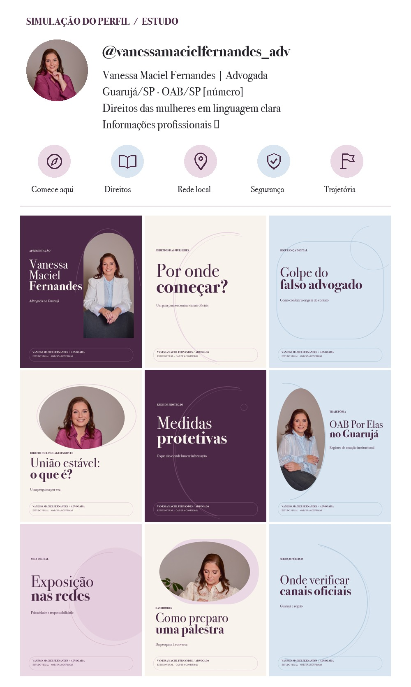
03 · Sistema visual
O ameixa conversa com a blusa magenta e com a presença do lilás no perfil. O azul vem dos looks do ensaio. Marfim aquece a composição; grafite sustenta a leitura. Sugerimos Bodoni 72 em toda a composição, com variações de peso para distinguir títulos, destaques e textos de apoio. O estudo tipográfico mostra os pesos Book e Bold.
Testar o retrato 036 como avatar alternativo; o 026 abre a apresentação, o 038 dá proximidade à pauta educativa, o 021 acompanha a trajetória e o 084 funciona para bastidores. Alternamos retratos em arco ou oval com capas tipográficas em que a curva entra como contorno. Das referências, trouxemos o contraste entre a serifa e o texto de apoio, as linhas finas e o espaço em torno do retrato. As formas curvas, os looks do ensaio e a paleta da Vanessa dão ao perfil uma identidade própria. Cada capa abaixo abre o JPG de estudo em 1080 × 1350 px.
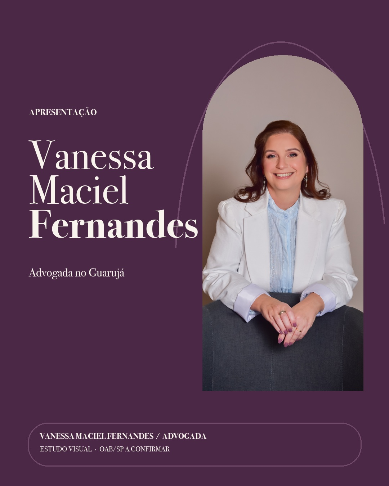
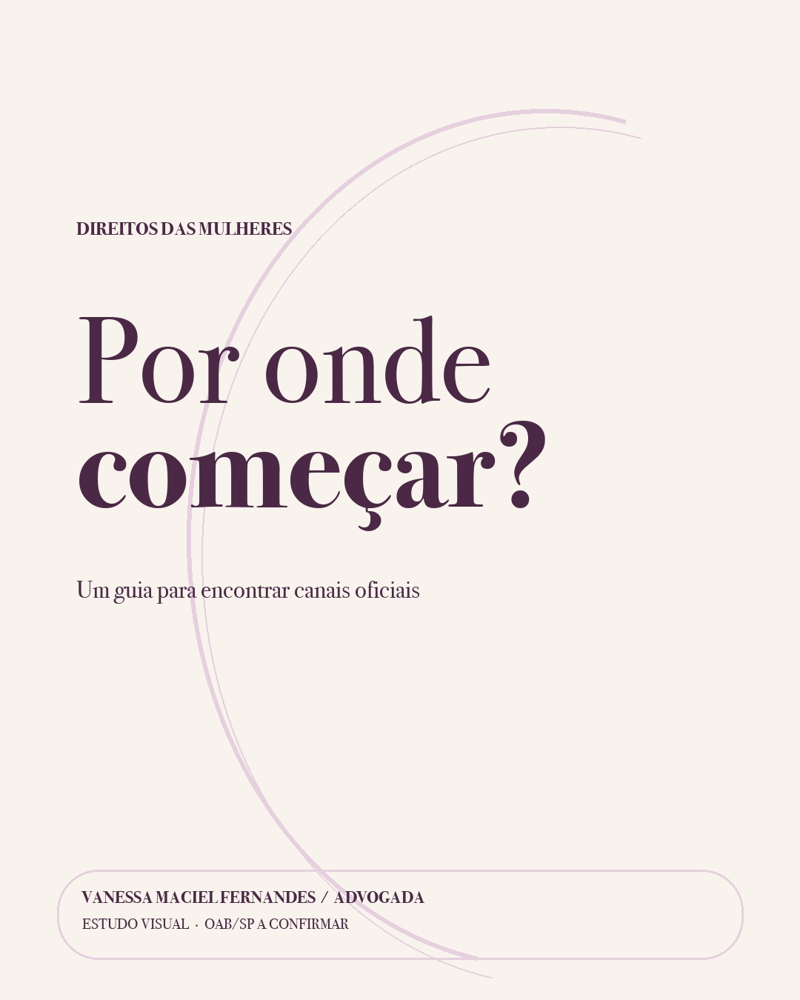
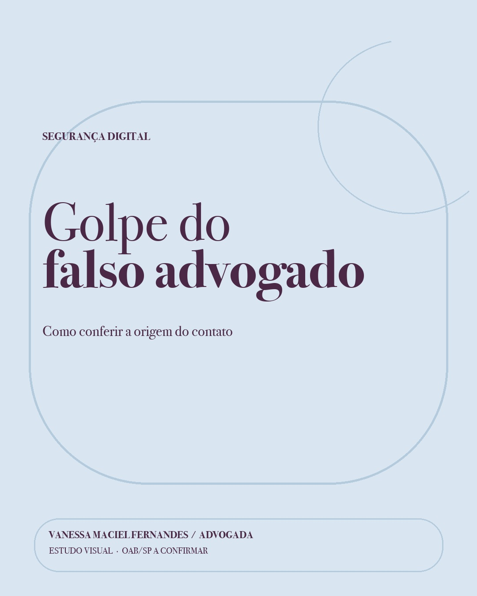
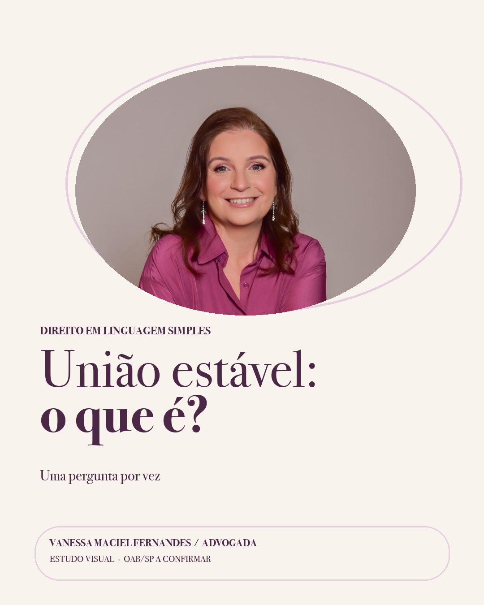
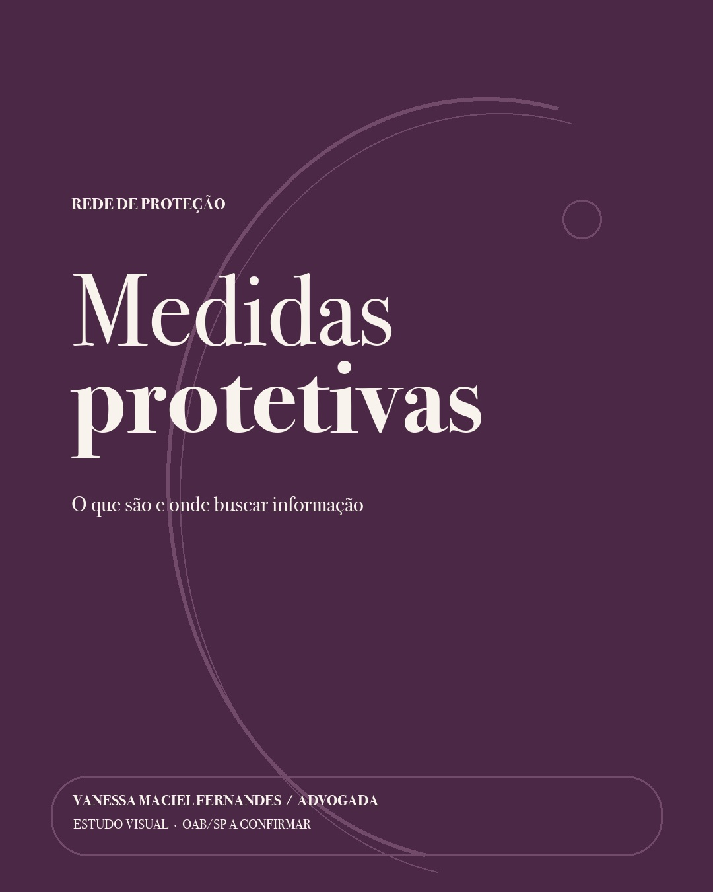
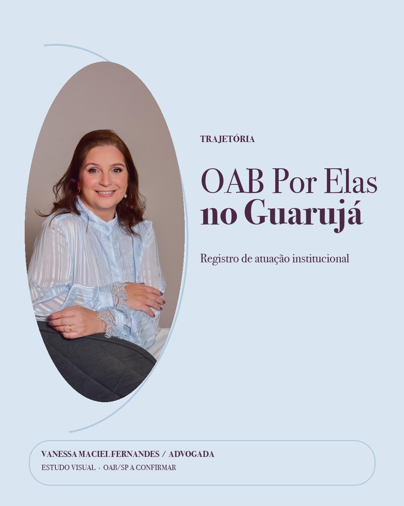
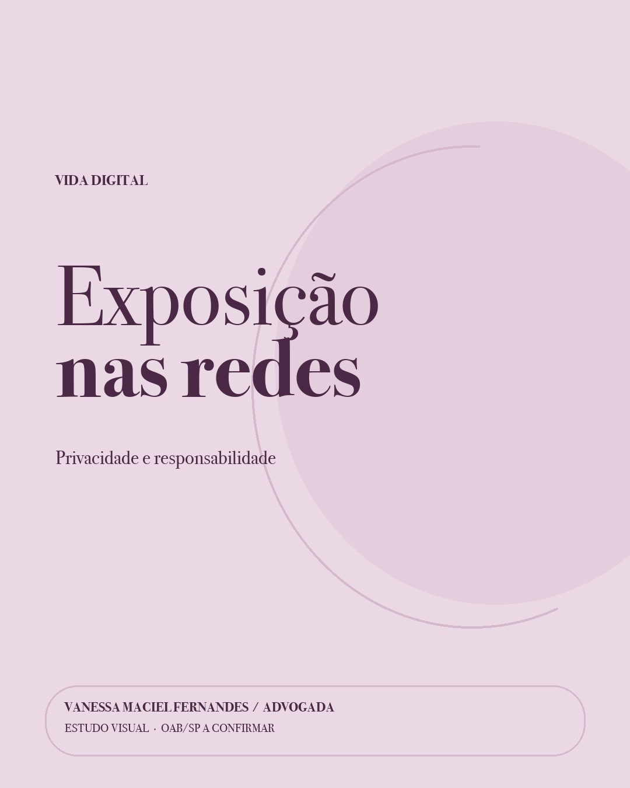
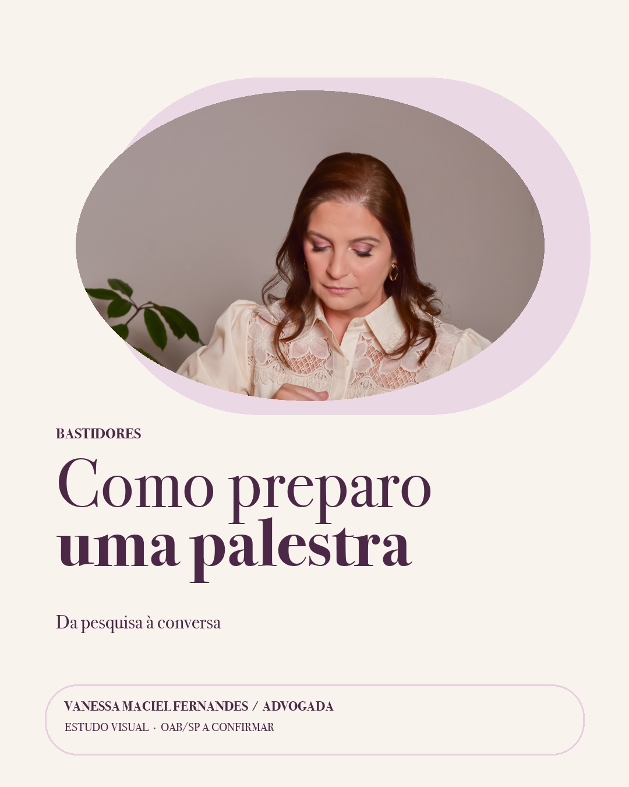
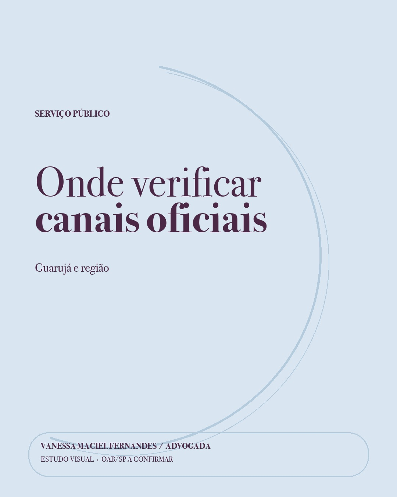
Estudos de capa, ainda sem inscrição validada. Para Reels e Stories, recompor em 1080 × 1920, proteger título e rosto no centro útil e conferir o recorte na prévia do Instagram. Destaques: bússola, livro aberto, pin de mapa, escudo e bandeira, com o nome fora do círculo. Créditos do ensaio no contexto editorial, sem coanunciar fotografia e advocacia.
04 · Primeiro ciclo
Sugerimos começar com dois posts por semana. Para os Reels, testar 30–45 segundos: pergunta de abertura, uma explicação e um fechamento útil. Gravar em tom de conversa; legendas na tela e um tema por vídeo.
No primeiro mês, comparar salvamentos e compartilhamentos por alcance nos carrosséis, retenção nos Reels e visitas ao perfil. Usar esses sinais para ajustar assunto e capa; sem metas numéricas antes da linha de base. Se houver perguntas em Stories, pedir dúvidas gerais e evitar análise de casos individuais.
05 · Publicidade profissional
Fontes: Provimento CFOAB 205/2021 · Código de Ética, art. 44 · Guia da OAB SP · Orientações do TED divulgadas em 2026.
06 · Vida pessoal e bastidores
Sugerimos uma moldura leve para momentos que Vanessa queira guardar no feed: fundo marfim ou azul, cantos suavemente arredondados e um arco discreto. A foto ocupa a maior parte da peça e o texto em Bodoni 72 entra apenas quando ajuda a situar a cena. Uma foto espontânea também pode ir direto ao feed ou aos Stories.
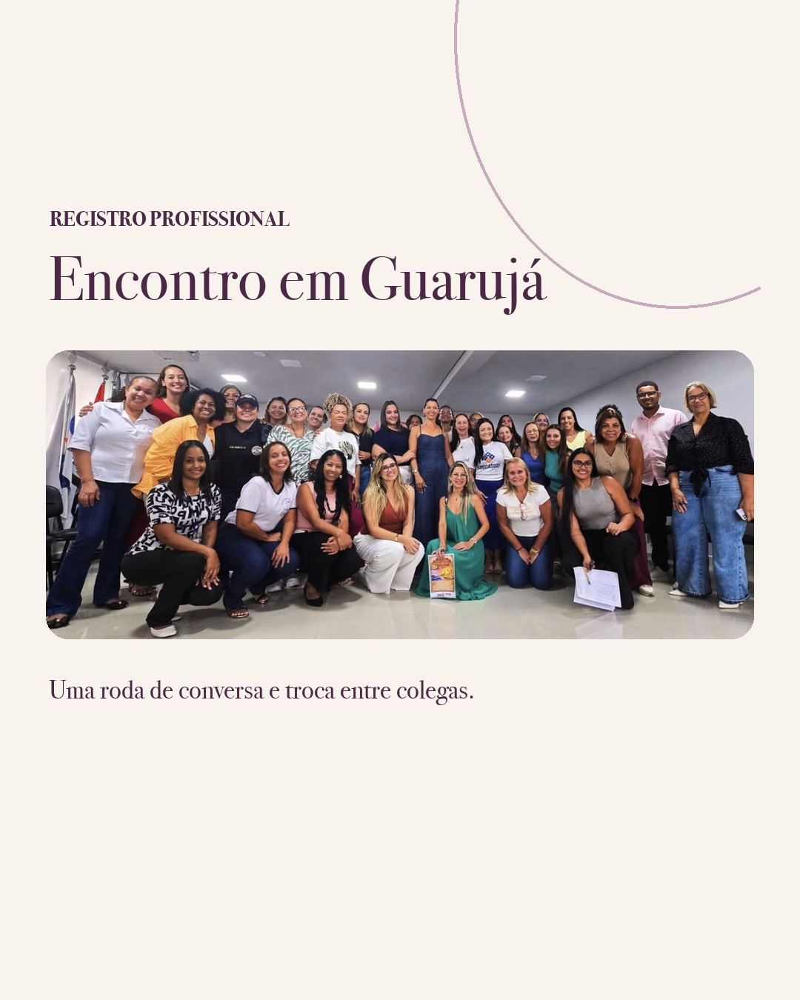
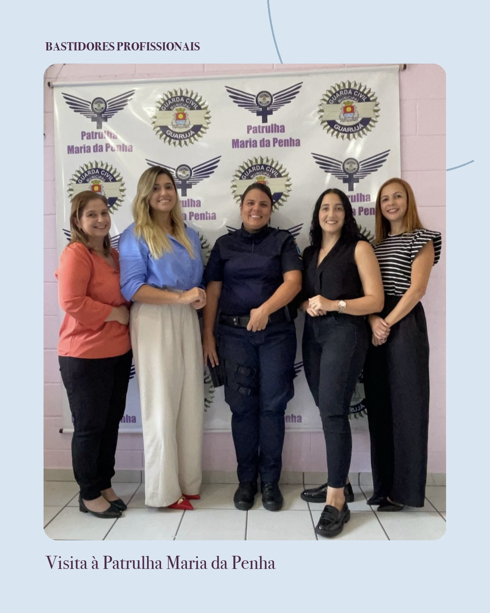
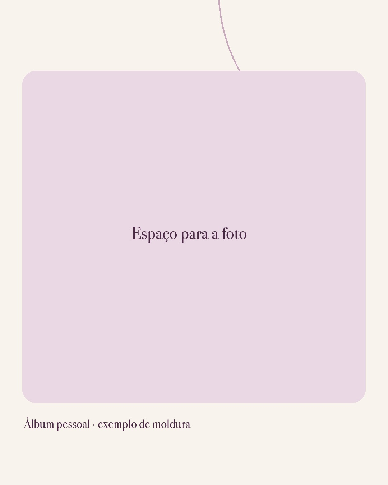
Escolher momentos que Vanessa queira manter no perfil, como uma celebração em família, um encontro com colegas ou um aprendizado de bastidor. Os Stories acomodam registros do dia a dia. Se quiser reunir memórias pessoais, pode aproveitar o destaque de família que já usa.
Nos posts pessoais, a primeira pessoa é a voz da própria Vanessa. Para família, algo como “Um dia que eu quis guardar por aqui.” Para colegas, começar pelo que aconteceu e contar uma coisa que ela levou da conversa. Antes de postar, confirmar se as pessoas estão confortáveis em aparecer e conferir se a imagem expõe documentos ou atendimentos.
Os dois primeiros exemplos usam as capturas enviadas como referência. Para montar os posts, sugerimos partir das fotos originais e confirmar o contexto de cada encontro. Em fotos institucionais, a legenda identifica a ocasião; os símbolos visíveis na cena não integram a assinatura da Vanessa.